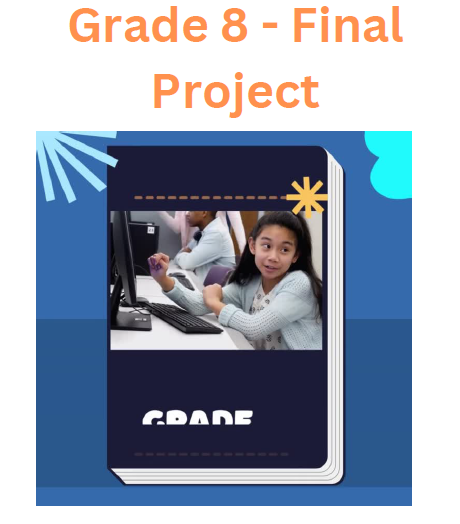

Students' Projects
Scan the QR codes below to access a sample of students' projects presented in videos.
Grade 8 Project : "Technology in Healthcare Advancements in the UAE"
 Click here to Visit Our WebpageDescription:A video for Grade 8 Students when some of them are working on a web page that describes the role of technology intransforming healthcare in the UAE, highlighting innovationslike telemedicine, AI-powered diagnostics, and health apps and the other are doing a poster to describe the same topic.
Grade 9 Project : Using Excel Sheets to analyze and catigorize some database

Description: A video produced by Grade 9 students when they are explaining their ability to use excel sheets to analyze and catigorize some database.
Grade 10 Project : Advanced Function in Excel Sheets
Description: A video produced by Grade 10 students when they are explaining their ability to use some advanced function in Excel Sheets.